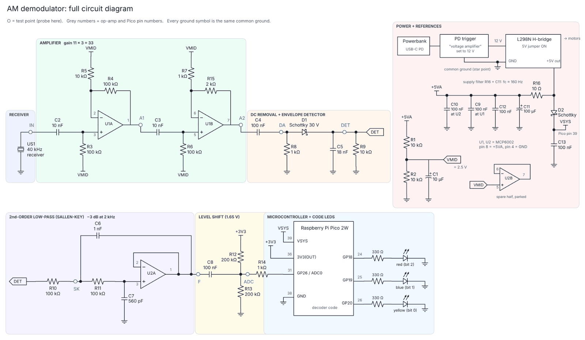

AM demodulator for a maze robot
The receiver circuit for our Hackathon maze robot. It picks up an amplitude-modulated 40 kHz ultrasonic signal, turns it into a clean voltage and lets a Raspberry Pi Pico 2W decode which exit the robot has to go to. I designed and built this circuit.
- Year
- 2026
- Context
- Smart Technology Hackathon, part 2, University of Twente
- Team
- Team project, my part: the AM demodulator
- Controller
- Raspberry Pi Pico 2W

What it does
The robot has to find the finish point of a maze. An amplitude-modulated 40 kHz ultrasonic signal tells it which exit to go to. My circuit turns what the receiver picks up into a clean, slow voltage that the Pico can sample, and the decoder code on the Pico shows the exit as a 3-bit code on a red, a blue and a yellow LED.
How the signal chain works
- Amplifier. The receiver gives a tiny signal, so two MCP6002 op-amp stages amplify it by 11 and then 3, so 33 in total. Both stages are biased at VMID, 2.5 V from a resistor divider, so the circuit runs on a single 5 V supply.
- Envelope detector. A coupling capacitor removes the DC level, then a Schottky diode with an 18 nF capacitor and a 10 kΩ resistor follows the peaks. The 40 kHz carrier disappears and only the envelope, the actual message, is left.
- Low-pass filter. A second order Sallen-Key filter with its −3 dB point at 2 kHz smooths away what’s left of the carrier ripple.
- Level shift. The signal is AC coupled onto 1.65 V, the middle of the Pico’s 0 to 3.3 V ADC range, and goes into GP26 (ADC0) through a 1 kΩ resistor.
- Decoding. The Pico samples the envelope, decodes it and drives the three code LEDs on GP18, GP19 and GP20.
Driving through the maze
The robot steers with a PID controller fed by ultrasonic distance sensors. The decoded exit tells it where to go.
Power and motor drive
A USB-C power bank with a PD trigger set to 12 V feeds the L298N H-bridge that drives the motors. The analogue part gets its own 5 V rail from the L298N’s 5 V output through a 10 Ω and 100 µF filter (corner around 160 Hz), so motor noise stays out of the amplifier. The Pico gets its VSYS through a Schottky diode, and everything meets at one star ground point.
Result
My part of the project, the demodulator, is finished. The team runs everything, from AM decoding to navigation, on the same Pico 2W.
Try it
Envelope detector
Change C5 and watch the detector output. Too small and the 40 kHz carrier ripples through, too big and the bits smear together.
Simulated: 40 kHz carrier, 1 ms bits, R9 = 10 kΩ. My circuit uses 18 nF.